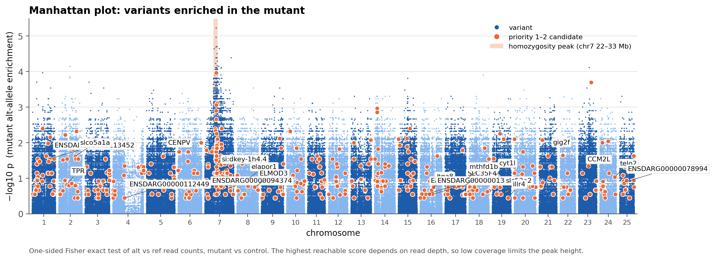
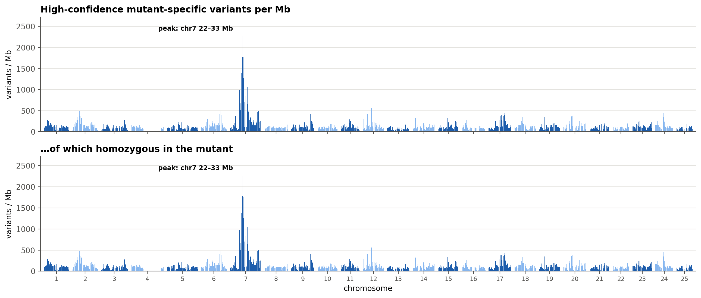
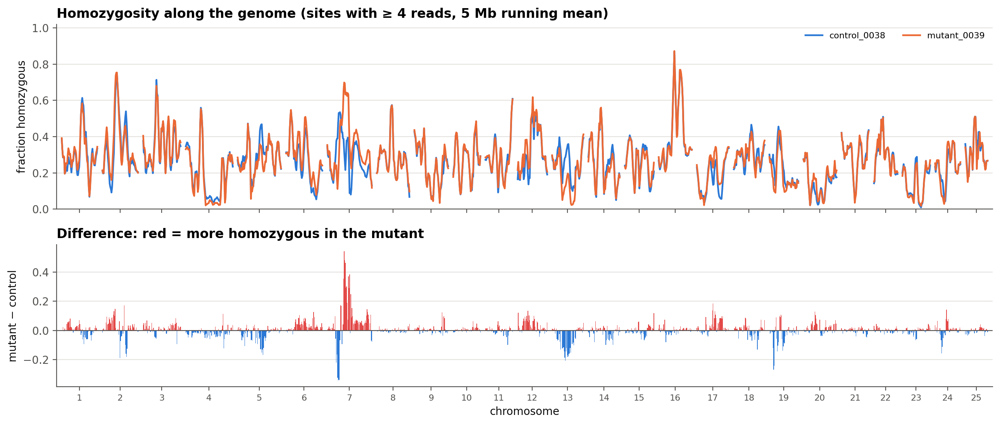
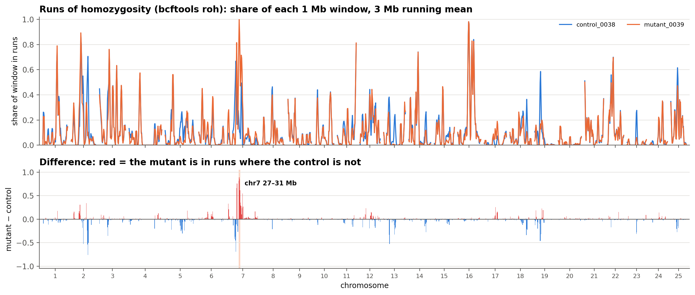
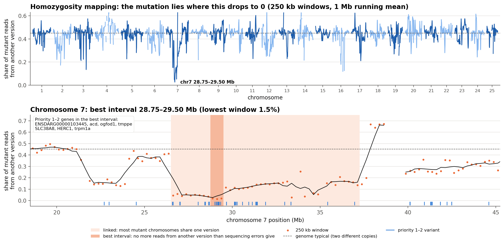

Gray lab · Lab tutorial
Finding the mutation: whole-genome sequencing of zebrafish mutants
How our pipeline turns raw sequencing files into a short list of candidate mutations, and how to read what it gives you.
One command · ./run_wgs.sh
About 2 hours of computer time
No coding needed
Roadmap
Five parts, plus a math appendix
1
The ideas
Mutant vs control, key words, and why recessive mutations leave a footprint
2
Running it
Files, the sample sheet, choosing a comparison mode, one command
3
Inside the pipeline
The eight steps, the math behind each test, and how candidates are ranked
4
Reading the results
The report, the Excel workbook, and how far to trust a variant
5
Worked example
Our jaw mutant: what the pipeline found, and the next experiments
6
Appendix: the math
Error models, genotype likelihoods, Bayes, the bcftools caller, depth
Zebrafish WGS tutorial · 2
Part 1 of 6
The ideas
Why we compare a mutant with a control, the handful of words you need, and why a recessive mutation leaves a visible footprint in the genome.
The question
Shrink millions of differences to a few to test
14.1 million
places where our fish differ from the reference genome
173,748
carried by the mutant far more than by its sibling
1,192
of those change a protein
524
rank as top candidates (priority 1 or 2)
1
the goal: the change that causes the phenotype
Numbers from our jaw-mutant sample (0039) vs its sibling sample (0038), sibling mode · 4
Key words
Seven words cover most of the report
| Word | What it means |
|---|---|
| Read | One short piece of DNA from the sequencer (here 151 letters long) |
| Coverage | How many reads cover each position on average: 15× is good, 3× is thin |
| Reference genome | The standard zebrafish sequence (GRCz11) that every fish is compared with |
| Variant | A difference from the reference: a changed letter (SNV) or a small insertion or deletion (indel) |
| Homozygous | Both copies of the chromosome carry the variant; heterozygous: only one copy |
| Allele fraction | Share of reads showing the variant: about 1.0 if homozygous, about 0.5 if heterozygous |
| Impact | Predicted effect: HIGH breaks the protein (stop, frameshift, splice site); MODERATE swaps one amino acid |
Zebrafish WGS tutorial · 5
Recessive genetics
Wild-type-looking siblings can carry the mutation
Two carriers (+/m × +/m) give mutants and siblings. Share of reads that show the mutation:
Mutant (m/m)
25% of the clutch
100%
Carrier sibling (+/m)
50% of the clutch
≈ 50%
Non-carrier sibling (+/+)
25% of the clutch
0%
Pool of siblings
2 of 3 are carriers
≈ 33%
So a sibling control can show the mutation in some reads. Requiring it to be completely absent can throw the real mutation away. That is why the pipeline has a sibling mode.
Zebrafish WGS tutorial · 6
The linked region
The mutation drags a whole region along with it
Linked region: both mutant copies identical
Mutant, copy 1
m
Mutant, copy 2
m
Carrier sibling, copy 1
m
Carrier sibling, copy 2
Around the mutation, the mutant inherited the same stretch of chromosome twice, so every variant there is homozygous.
The pipeline counts homozygous mutant variants per Mb. A tall peak shows where to look for the mutation.
Each colour is a stretch of chromosome inherited from one grandparent · 7
Part 2 of 6
Running it
What you need, how to describe your samples, which comparison mode to pick, and the one command that runs everything.
Before you start
Three things to have ready
Sequencing files
The .fastq.gz files from the core, for at least one mutant and one control. Paired-end (R1 + R2) is best; single-end works.
A server login
Log in to the lab server with ssh (Terminal on a Mac, PowerShell on Windows). All the software is already installed there.
Your own copy
One pipeline folder per experiment. Copy the FASTQ files into its data/raw folder (Cyberduck or FileZilla work well).
Your time: about 15 minutes
Computer time: about 2 hours, longer for deeper data
First run only: about 1 hour of downloads
Step-by-step instructions: the pipeline guide, “First-time setup” · 9
Setup · once, about 5 minutes
Log in and make your own copy
# 1. Log in (Mac: Terminal · Windows: PowerShell)
ssh YOUR_USERNAME@SERVER_ADDRESS
# 2. Your own copy: one folder per experiment
cd /stor/work/Gray/projects
git clone https://github.com/xuziyi0909/Zfish_WGS.git \
my_wgs_project
cd my_wgs_project
# 3. Optional: reuse a prepared genome (saves ~1 h)
cp -r /stor/work/Gray/projects/Zfish_WGS/reference ./
find reference -type f -exec touch -d "$(date -R)" {} +
sed -i "s|^data.dir = .*|data.dir = $PWD/reference/snpeff|" \
reference/snpeff/snpEff.config
# 4. Check the software
./run_wgs.sh --check
Password invisible?
That is normal: type it and press Enter.
Folder name
Name it after the experiment, with no spaces, e.g. jaws_mutant_2026.
Every line “ok”?
Then you are ready. A MISSING line: send the output to the server administrator.
10
Step 1 · Your sequencing files
Put the FASTQ files in data/raw
From your computer
- Open Cyberduck or FileZilla
- Connect with SFTP, using your server login
- Go to my_wgs_project/data/raw
- Drag the .fastq.gz files in
Already on the server
For example, a zip from the sequencing core:
mkdir -p data/raw
unzip "/path/to/file.zip" -d data/raw
ls data/raw
Keep R1 and R2 in the file names. You need to know which file is read 1 and which is read 2.
One sample on several lanes? Join the lanes, keeping R1 and R2 apart:
cat S1_L001_R1_001.fastq.gz S1_L002_R1_001.fastq.gz > S1_R1.fastq.gz
Avoid spaces in file names: rename with mv "my file.fastq.gz" my_file.fastq.gz · 11
Step 2 · config/samples.tsv
Tell the pipeline which fish is which
| sample | group | fastq_1 | fastq_2 |
|---|---|---|---|
| wt_sib1 | control | data/raw/WT1_S1_L001_R1_001.fastq.gz | data/raw/WT1_S1_L001_R2_001.fastq.gz |
| wt_sib2 | control | data/raw/WT2_S2_L001_R1_001.fastq.gz | data/raw/WT2_S2_L001_R2_001.fastq.gz |
| mut1 | mutant | data/raw/MUT1_S3_L001_R1_001.fastq.gz | data/raw/MUT1_S3_L001_R2_001.fastq.gz |
| mut2 | mutant | data/raw/MUT2_S4_L001_R1_001.fastq.gz | data/raw/MUT2_S4_L001_R2_001.fastq.gz |
Separate columns with Tab, never spaces
group is either control or mutant
Single-end data: leave fastq_2 empty
Sample names: short, no spaces or slashes
./run_wgs.sh --check # one “ok” line per sample
Edit with nano, or in Excel and save as “Tab delimited text” · 12
Step 2 · Edit and check the sheet
The check tells you exactly what to fix
Editing in nano
| Key | Does |
|---|---|
| Tab | Next column |
| Ctrl+O, Enter | Save |
| Ctrl+X | Exit |
Open it with nano config/samples.tsv. Or use Excel: Save As “Tab delimited text (.txt)”, upload as config/samples.tsv.
$ ./run_wgs.sh --check
== Step 2/3: checking the sample sheet
ok control_0038 control single-end
ok mutant_0039 mutant single-end
Setup looks good.
# a sheet with spaces instead of Tabs:
Problems found in config/samples.tsv
- missing column 'group' (columns
must be separated by TABs, not spaces)
# a wrong path:
- mut1: file not found: data/raw/...
Our example used single-end data: fastq_2 left empty for both samples · 13
Step 3 · config/config.yaml
Pick the comparison mode that fits your control
mode: absent
Control: an unrelated wild-type fish or line, e.g. the parental strain.
A candidate is: in the mutant, and in no control reads at all.
Also for: dominant or brand-new mutations.
mode: sibling
Our jaw mutant
Control: wild-type-looking siblings of a recessive mutant, one fish or a pool.
A candidate is: in at least 90% of mutant reads, and at most 60% of control reads.
New category: mutant-enriched (in some sibling reads).
comparison:
mode: sibling # then save, and run ./run_wgs.sh
Thresholds: min_alt_fraction_mutant 0.9 · max_alt_fraction_control 0.6 (both adjustable) · 14
Step 3 · Other settings (optional)
The defaults suit most runs; change these when…
| Setting | Default | Change it when |
|---|---|---|
| min_alt_reads_mutant | 2 | Coverage is high (over 20×): raise to 3–5 |
| min_depth_control | 4 | Coverage is high: raise to 8–10 for stricter calls |
| mutant_rule | any | Several mutants must all share the mutation: all |
| min_alt_fraction_mutant | 0.9 | Sibling mode, mutant pool with a few mis-sorted fish: 0.8 |
| demote_flagged | true | You want known and flagged variants at their normal priority |
| min_qual | 30 | You want more sensitive but noisier calls: 20 |
| structural_variants: enabled | true | You want to skip the slowest step: false |
| known_variants, protein_check | true | The server has no internet access: false |
| output_dir | results | You want runs side by side, e.g. results_run2 |
Edit with nano config/config.yaml; each setting has a comment. Re-running redoes only the affected steps · 15
Step 4 · Run
Start it inside screen, then walk away
screen -S wgs # a session that outlives logout
./run_wgs.sh # checks, then runs everything
Ctrl+A, then D # leave it running; log out
screen -r wgs # later: come back to check
Finished! Open this file in a web browser: results/report.html
Stopped part-way?
Fix the cause and run ./run_wgs.sh again. Finished steps are skipped.
How long?
About 2 hours for two samples; about 1 hour of alignment per 100 M reads.
Each run writes a full log to results/logs/ · 16
Step 4 · While it runs
About two hours for two samples
| Stage | Time |
|---|---|
| Download reference data (first run only) | ~1 h |
| Clean and align, samples in parallel | ~45 min |
| Call variants | ~10 min |
| Structural variants, alongside | ~25 min |
| Annotate, compare, check, report | ~35 min |
| Total | ~2 h |
Example data: 61 M and 74 M reads, 48 cores. Plan on about 1 hour of alignment per 100 M reads.
Checking on it
screen -r wgs
...
28 of 41 steps (68%) done
The full log is saved as results/logs/run_<date>.log, so you can also read it without screen.
Done when it prints Finished! and the path to report.html.
A run can be stopped with Ctrl+C and resumed later with the same command · 17
Part 3 of 6
Inside the pipeline
The eight steps from raw reads to ranked candidates, the checks that weed out convincing-looking false leads, and the math behind each test.
Overview
Eight steps from raw reads to ranked candidates
1
Clean reads
fastp
2
Align to the genome
bwa-mem2
3
Mark duplicates
samtools
4
Call variants
bcftools
5
Predict effects
snpEff
6 · new
Known variants
Ensembl / dbSNP
7
Mutant vs control
absent or sibling mode
8 · new
Protein check
RefSeq + 6 species
Alongside: structural variants (DELLY), plots, QC report. Out: report.html and an Excel workbook.
Orange outline: steps added or extended after the jaw-mutant analysis · 19
Step 1 · Clean the reads · fastp
Cut away what is not zebrafish DNA
A 151-letter read from a short DNA fragment:
DNA fragment (110 letters): kept
adapter: cut
Adapter: the kit’s own sequence (AGATCGGAAGAGC…), read when the fragment is shorter than the read. Paired-end: found from the read overlap.
Poly-G tails: runs of G that two-colour sequencers produce when the signal fades.
Poor reads: mostly low quality, or shorter than 50 letters after trimming.
Our data
89% of reads held adapter, so about a quarter of all letters were cut
98.8–99.1% of reads kept · 97% high-quality letters
Per-sample report: results/qc/fastp/<sample>.fastp.html · also summarised in qc/multiqc_report.html · 20
Steps 2–3 · Align and mark duplicates · bwa-mem2, samtools
Place each read, then count each fragment once
2 · Align
Each read is matched to its best place in GRCz11, about 1.4 billion letters.
Each placement gets a mapping quality: how sure it is. Reads in repeats score low; variant calling ignores reads below 20.
Ours: 98.4% of reads placed
3 · Mark duplicates
Reads that start at the same place on the same strand are PCR copies of one fragment. All but one are flagged.
Without this, one PCR error copied ten times could pose as a real variant.
Ours: 12.8–13.2% duplicates (fine)
Usable coverage
Counting only well-placed, non-duplicate reads:
2.8× · 3.4×
sibling · mutant (15× is the goal)
Output: results/alignments/<sample>.bam + .bai (open in IGV); depth per chromosome feeds report sections 1–2 · 21
The math · Quality scores
Every quality score is an error chance on a log scale
Q = −10 × log10 P(wrong) so P(wrong) = 10−Q/10
| Q | P(wrong) | 1 in … | Where the pipeline uses it |
|---|---|---|---|
| 10 | 0.1 | 10 | – |
| 20 | 0.01 | 100 | Base quality ≥ 20, mapping quality ≥ 20 |
| 30 | 0.001 | 1,000 | “Q30” letters in fastp; variant QUAL ≥ 30 |
| 40 | 0.0001 | 10,000 | – |
Each +10 means ten times fewer errors. Example: Q = 20 → 10−2 = 1 wrong in 100.
One scale, three questions
Base quality: is this letter wrong? Set by the sequencer.
Mapping quality: is this read in the wrong place? bwa-mem2 compares the best and second-best placement.
QUAL: is there no variant here at all? bcftools, next slides.
Phred scale, named after the first program that used it · 22
Step 4 · Call variants · bcftools
Examine every position in all fish at once
Split
Genome cut into 30 pieces, run in parallel
Pile up
Reads stacked per position; mapping and base quality ≥ 20
Call
Genotype of every fish, decided jointly
Tidy
One change per line, indels left-aligned, quality ≥ 30
What is stored for each variant and each fish (tmppe, chr7:29,157,506 C>T):
| Fish | Genotype | Reads with T | Reads with C |
|---|---|---|---|
| Mutant 0039 | homozygous | 5 | 0 |
| Sibling 0038 | reference | 0 | 6 |
Why jointly? The sibling’s 6 reads were looked at and show no T. “Absent” means checked and not seen, not merely “not reported”.
Result: 14.1 million variants in our two samples · results/variants/all_samples.annotated.vcf.gz · 23
The math · Calling a genotype
Which genotype best explains the reads?
n reads, k of them show the new letter T, each letter wrong with chance ε (Q30: ε = 0.001)
P(reads | CC) = (ε/3)k (1 − ε)n−k
P(reads | CT) = (½)n
P(reads | TT) = (1 − ε)k (ε/3)n−k
CT: each read comes from either copy, a coin flip. An error gives any of 3 other letters: ε/3. bcftools weighs the three with a prior (about 1 position in 1,000 differs) and reports the most likely.
QUAL = −10 log10 P(no sample has T | reads)
tmppe, chr7:29,157,506 C>T (equal priors)
| Genotype | Mutant: 5 T, 0 C | Sibling: 0 T, 6 C |
|---|---|---|
| CC | 4×10−18 → 0% | 0.994 → 98.5% |
| CT | 1/32 → 3% | 1/64 → 1.5% |
| TT | 0.995 → 97% | 10−21 → 0% |
The weak spot at 3× coverage: a heterozygote shows only T in (½)n of cases, 1 in 8 with 3 reads and 1 in 32 with 5. Some “homozygous” calls are really one copy.
Simplified: bcftools also uses each letter’s own quality and all samples together · full derivation: slides 65–69 · 24
Step 5 · Predict effects · snpEff
What does each change do to its gene?
Impact levels
| Impact | Examples |
|---|---|
| HIGH | Stop gained, frameshift, splice site, start or stop lost |
| MODERATE | Missense; in-frame insertion or deletion |
| LOW | Silent: same amino acid |
| MODIFIER | Introns, UTRs, between genes |
Only HIGH and MODERATE get a priority. Where a variant hits several transcripts, the most severe effect is shown.
Reading the notation
| Written | Means |
|---|---|
| p.Arg370Trp | Arginine 370 becomes tryptophan |
| p.Ser320* | Serine 320 becomes a stop codon |
| p.His185fs | Reading frame shifts at histidine 185 |
| p.Ter252Cysext*? | Stop codon lost; protein runs on |
| c.1108C>T | The tmppe change at DNA level: C becomes T at coding position 1108 |
Examples from our data: tmppe, SLC35F4, ENSDARG00000013153, si:dkey-1h4.4 · gene models: Ensembl 113 · 25
Step 6 · Known variants
A new mutation is almost never already catalogued
18.3 million
known zebrafish variants (Ensembl 113: dbSNP and EVA), matched by position and changed letter
623 of 1,192
high-confidence protein-changing candidates in our mutant were known strain variants
Example
slc39a13 A23P had the best jaw biology (mouse knockout: small jaw), but it is rs507894324, a known polymorphism. It is now flagged and moved to priority 5.
Columns in the tables: novel (TRUE/FALSE) and known_id (the rs number) · 26
Step 6 · How the matching works
Same place and same change, or it is novel
Download once
Ensembl 113 list: 18.3 million zebrafish variants (194 MB)
Rewrite like ours
95,094 multi-change sites split; 470,839 indels shifted left
Look up each call
Chromosome, position, reference and new letters must all agree
| Our variant vs the list | Result |
|---|---|
| Same position, same change | Known, e.g. slc39a13 A23P = rs507894324 |
| Same position, a different change | Novel: a new allele at a variable site |
| Same indel, written at a shifted position | Known, thanks to the rewrite |
| Not in the list at all | Novel |
Stored as novel (TRUE/FALSE) and known_id (the rs number) in every table · 27
Step 7 · The sorting rules
Every variant lands in exactly one category
| Category | Absent mode | Sibling mode (mutant in ≥ 90% of reads) |
|---|---|---|
| Mutant-specific | Control covered; no reads show it | Control covered; no reads show it |
| Mutant-enriched | – | Covered control shows it in ≤ 60% of reads |
| Low confidence | Control has < 4 reads, none show it | Control has < 4 reads |
| Not homozygous | – | Mutant under 90%; control shows none |
| Shared | Any control read shows it | Control over 60%; or mutant under 90% and control shows some |
| Control only | Only the control has it | Same |
| Low evidence | Too few reads to decide | Same |
“Mutant has it”: ≥ 2 reads with it, ≥ 3 in total
“Control covered”: ≥ 4 reads, in every control
Several mutants: mutant_rule any or all
Orange = high confidence: these two categories feed priorities 1–3 and the homozygosity peak · 28
Step 7 · Mutant vs sibling
Sibling mode: compare the share of reads
Mutant must be
Sibling may be
share of reads
0
0.33
0.5
0.6
0.9
pool
carrier
mutant
Mutant-specific
Sibling well covered (4+ reads), none show it
Ours: 18,988
Mutant-enriched
Sibling shows it in some reads, at most 60%
Ours: 154,760
Low confidence
Sibling had fewer than 4 reads there
Ours: 2,111,050
Set aside
Not homozygous in the mutant, or above 60% in the sibling
Orange outline = high confidence. Absent mode keeps only the first box, with zero sibling reads · 29
The math · Sibling-mode thresholds
Why 90% and 60%: each read is a coin flip
P(k of n reads show it) = C(n, k) f k (1 − f )n−k (binomial)
| Reads n | One-copy mutant ≥ 90% (f = ½) | Carrier sibling > 60% (f = ½) | Sibling pool > 60% (f = ⅓) |
|---|---|---|---|
| 3 | 12.5% | not judged | not judged |
| 4 | 6.3% | 31% | 11% |
| 5 | 3.1% | 19% | 4.5% |
| 6 | 1.6% | 34% | 10% |
| 10 | 1.1% | 17% | 2.0% |
| 15 | 0.05% | 15% | 0.9% |
Second column: how often a one-copy variant slips through. Last two columns: how often the true mutation is wrongly called “shared”.
Where ½ and ⅓ come from
A carrier has the mutation on 1 of 2 copies: f = ½.
A normal-looking sibling is a carrier ⅔ of the time (50% vs 25% of the clutch), so a pool’s reads carry it ⅔ × ½ = ⅓.
The price
With one carrier sibling, the mutation itself is lost in 15% to 34% of cases when the sibling has 4–15 reads. The region still shows, because thousands of linked variants are counted. Pools and more reads help.
C(n, k) = number of ways to choose which k of the n reads show it · settings: min_alt_fraction_mutant, max_alt_fraction_control · 30
Step 8 · Protein check
Is the mutant residue actually normal?
aldh1a2, residue 393
Reference genome (GRCz11)
P
Our mutant
A
Zebrafish cDNA protein (RefSeq NP_571925)
A
Human, rat, chicken, frog, medaka, fugu
G
Verdict: the reference genome carries the rare residue; the mutant is normal.
Each missense change is aligned to published zebrafish proteins and to the same protein in six other vertebrates.
Matches zebrafish RefSeq
Reference error or common allele: priority 5
Matches the vertebrate consensus
Probably harmless (lgr4 I745V: V in all six): priority 5
Conserved in every species
Change more likely damaging: listed first
Columns: allele_check, refseq_residues, ortholog_residues · Species: human, rat, chicken, frog, medaka, fugu · 31
Step 8 · How the protein check works
Line up the proteins, read off one residue
1 · Take the change
Missense only, e.g. p.Pro393Ala, in the zebrafish protein of its transcript
2 · Line up
With up to 4 RefSeq proteins of the gene and the closest ortholog in 6 species
3 · Read the residue
Trusted only if 30% of the 20 neighbouring residues match
4 · Decide
The first rule below that applies
| allele_check | Rule | Ours · action |
|---|---|---|
| matches_zebrafish_refseq | A RefSeq protein has the mutant residue | 69 · priority 5 |
| …vertebrate_consensus | 3+ species aligned; most have the mutant residue | 62 · priority 5 |
| alt_seen_in_orthologs | At least one species has the mutant residue | 128 · kept |
| conserved | 3+ species aligned; all have the reference residue | 38 · listed first |
| variable / no_orthologs | Species differ / only RefSeq could be compared | 493 / 198 |
Counts: our 1,192 high-confidence protein-changing variants (151 not_checked, 53 not missense) · 32
The math · Protein alignment
Score the alignment, then decide by counting species
1 · BLOSUM62 score for each lined-up pair
s(a, b) = 2 × log2( pab / qa qb ), rounded
pab: how often a and b line up in related proteins. qa qb: how often by chance. Positive = a common swap.
W–W +11 · P–P +7 · A–A +4 · I–V +3 · D–E +2 · P–A −1 · P–L −3 · R–W −3
Total = Σ s − 10 per gap − 0.5 per extra gap letter
The best total over all alignments is found by dynamic programming (Needleman–Wunsch). Gaps at the ends are free.
2 · Trust the residue?
At least 6 of the 20 neighbours (10 each side) identical: 30%. Random letters match only about 6% of the time (Σ qa2).
3 · Count the species
n species aligned; nref, nalt have the reference or mutant residue.
Consensus: n ≥ 3, nalt > nref, nalt ≥ n/2. lgr4 I745V: 6 of 6 have V.
Conserved: n ≥ 3, nref = n. tmppe R370W: human, rat, chicken all R.
Biopython PairwiseAligner, global mode · thresholds in workflow/scripts/protein_check.py · 33
Ranking
Every protein-changing variant gets a priority
| Priority | Rule | In our data |
|---|---|---|
| 1 | HIGH impact, high confidence, homozygous in the mutant | 21 |
| 2 | HIGH impact on one copy, or MODERATE impact homozygous (high confidence) | 503 |
| 3 | Any other high-confidence protein change | 3 |
| 4 | Protein-changing, but low confidence: the control had too few reads | 3,268 |
| 5 | Flagged: a known variant, or the mutant amino acid is normal elsewhere | 8,124 |
Priority ignores location. The causal change inside the homozygosity peak may be “only” priority 2, while a priority 1 far away is background. Weigh both.
Priority 0 = not protein-changing (kept in the full table) · 34
Alongside the eight steps
Genome-wide plots and large rearrangements
Variant density · peak
Homozygous high-confidence candidates per 1 Mb. Peak: the tallest window, extended while neighbours stay above 25% of it.
Homozygosity
Share of sites (4+ reads) homozygous in each fish; runs of homozygosity (bcftools roh) per 1 Mb; then mutant minus control.
Manhattan
Per variant, a one-sided Fisher test: do mutant reads carry it more often than control reads?
Coverage
Depth in 500 kb windows. Mutant/control ratio: −1 (log2) = one copy lost, +0.58 = one copy gained.
Structural variants
DELLY: deletions, duplications, inversions. Kept if they pass, are in the mutant and in no control.
Ours
228 structural variants (214 deletions), 148 touching a gene. Single-end reads miss many.
All figures are saved as PNG (slides) and PDF (papers) in results/plots/ · 35
The math · Manhattan plot
Where −log10 p comes from: a one-sided Fisher test
Count the reads at one variant (tmppe):
| new letter | reference | total | |
|---|---|---|---|
| Mutant | a = 5 | 0 | n = 5 |
| Sibling | 0 | 6 | 6 |
| Total | K = 5 | 6 | N = 11 |
The question: if the 5 new-letter reads had landed at random among all 11 reads, how often would the mutant get 5 or more of them?
p = Σx ≥ a C(K, x) C(N−K, n−x) / C(N, n)
tmppe: p = 1 / C(11, 5) = 1/462 = 0.0022
−log10 p = −log10 0.0022 = 2.66
| Reads (mutant · sibling) | p | −log10 p |
|---|---|---|
| tmppe: 5/0 · 0/6 | 0.0022 | 2.66 |
| TJP1: 3/0 · 2/6 | 0.061 | 1.22 |
| Carrier sibling: 5/0 · 3/3 | 0.12 | 0.92 |
| Same as tmppe at 15×: 15/0 · 0/15 | 6 × 10−9 | 8.19 |
Reading the axis: 1 = p of 0.1, 2 = 0.01, 3 = 0.001.
Read it as a map, not as proof
Depth sets the ceiling: at 3× no single variant can score high.
13 million tests: a Bonferroni cut-off would need 8.41. Our highest dot is 5.2 (chr7:29,041,013, reads 11/0 · 0/9). Next two slides: the test step by step, and reading the plot.
Hypergeometric test, scipy.stats.hypergeom · read counts summed over all mutant and all control samples · 36
The math · Fisher’s exact test, step by step
Deal the reads out again at random, and count
1 · Pool the reads. tmppe has 11 reads: 5 show T, 6 show C.
2 · Assume nothing is going on. If T had nothing to do with which sample a read came from, the 5 T reads would be scattered at random: like dealing 11 cards, 5 of them marked, into a hand of 5 (mutant) and a hand of 6 (sibling).
3 · List every possible deal. There are \(\binom{11}{5}=462\). The chart counts how many give the mutant 0, 1, … 5 T reads.
4 · p = share of deals at least as extreme as what we saw. We saw 5 of 5: only 1 deal in 462. p = 0.0022.
5 · Plot it. −log10 0.0022 = 2.66 is the height of tmppe’s dot.
Deals giving the mutant x T reads (of 462)
6
75
200
150
30
1 ← seen
0
1
2
3
4
5
deals with \(x\) T reads \(=\binom{5}{x}\binom{6}{5-x}\), e.g. \(x=2\): \(10\times20=200\)
“Exact”: every deal is counted, no approximation, so it works with a handful of reads · “one-sided”: only deals favouring the mutant count · 37
The math · Fisher’s test, the general formula
When more than one deal counts, add them up
\[p=\sum_{x\,\ge\,a}\frac{\binom{K}{x}\binom{N-K}{n-x}}{\binom{N}{n}}\]
N all reads · K reads with the new letter · n mutant reads · a new-letter reads the mutant has
Top: deals that give the mutant exactly x new-letter reads (pick x of the K, and the other n − x from the reference reads). Bottom: all deals. Sum: every outcome at least as extreme as the one seen.
| Example | new letter | reference | total |
|---|---|---|---|
| Mutant | a = 3 | 2 | n = 5 |
| Sibling | 1 | 5 | 6 |
| All | K = 4 | 7 | N = 11 |
Deals giving the mutant x new-letter reads (of 462)
21
140
210
84 ← seen
7
0
1
2
3
4
x = 3: C(4, 3) · C(7, 2) = 4 × 21 = 84
x = 4: C(4, 4) · C(7, 1) = 1 × 7 = 7
p = (84 + 7) / 462 = 0.197 → −log₁₀ p = 0.71
The sum stops at x = 4 because only 4 reads carry the new letter · tmppe (5 of 5, 0 of 6) scored 2.66 · 38
The math · Reading the Manhattan plot
The tower is many strong dots, not one high dot

One dot = one variant, height = −log10 p from the previous slide. 13 million tests; most dots below 1 are thinned out for drawing.
Orange = priority 1–2 candidates. Shaded = the homozygosity peak.
Horizontal bands: read counts are small whole numbers, so only a few p values are possible.
The ceiling is set by depth
Best possible: all n mutant reads new, all m sibling reads reference, \(-\log_{10}p=\log_{10}\binom{n+m}{n}\)
3·3 reads → 1.30 · 5·5 → 2.40 · 10·10 → 5.27 · 15·15 → 8.19
Why chr7 towers
Dots ≥ 2: 487 per Mb in the peak vs 6 elsewhere (81×). Dots ≥ 3: 48 vs 0.2. The linked region is full of “all new in the mutant, none in the sibling” sites.
Same signal as the density plot, seen per variant: highest dot 5.2 at chr7:29,041,013 (11 reads · 9 reads) · 39
The math · Peak, homozygosity, copy number
Windows turn weak single calls into a strong signal
Variant density
dw = homozygous candidates in 1 Mb window w
Peak: the tallest window, grown while the next window (or the one after) is ≥ 25% of its height.
Ours: 2,582 vs 125 per Mb on average, about 21× more.
Homozygosity
hw = homozygous sites / sites called
Sites with ≥ 4 reads and ≥ 1 new-letter read; a window needs ≥ 20. Averaged over 5 windows, then hmutant − hsibling.
A heterozygote with 4 reads looks homozygous (½)4 = 1 time in 16, in both samples alike, so the difference cancels it.
Copy number
rw = log2( Dmutant / Dcontrol )
D = depth in a 500 kb window ÷ that sample’s median depth, so sequencing more does not shift it.
One copy lost: log2(1/2) = −1. One gained: log2(3/2) = +0.58.
Why it works at 3×: each call may be wrong, but errors scatter evenly over the genome. Only linkage piles thousands of real homozygous variants into one region.
Window tables: results/plots/windows_1Mb.tsv and coverage_500kb_ratio.tsv · 40
The math · Finding the peak
Grow from the top while windows stay ≥ 25% tall
chr7: homozygous candidates per 1 Mb window
25% of 2,582 = 646
18
20
22
24
26
28
30
32
34
Window start (Mb) · dark orange = peak · light orange = bridged · grey = outside
Top: 28–29 Mb, 2,582. Cut-off: a quarter of that, 646.
Left: 27 (1,382) ✓ · 26 (652) ✓ · 25 (507) ✗ but 24 (668) ✓, so 25 is bridged · 23 ✓ · 22 (977) ✓ · 21 (180) ✗ and 20 (63) ✗: stop, start at 22.
Right: 29 ✓ · 30 ✓ · 31 ✓ · 32 (1,258) ✓ · 33 (395) ✗ and 34 (104) ✗: stop, end at 33.
35 Mb (699) is above the line but outside: the walk stops at the first two low windows in a row.
“≥ 25%” is the rule for continuing; the peak ends where it fails twice in a row · results/plots/windows_1Mb.tsv · 41
The math · Homozygosity mapping
Count the mutant reads from another version
The score of a 250 kb window
\[ s_w = \frac{\sum \text{reference reads in the mutant}}{\sum \text{all mutant reads}} \]
Summed over informative sites: the mutant has ≥ 2 new-letter reads (of ≥ 4), and the sibling ≥ 1 reference read (of ≥ 3). A mutant reference read there must come from a second version of the chromosome.
chr7 28.75–29.0 Mb: 1,034 sites, 5,632 reads, 104 reference: \(s = 104 / 5632 = 1.8\%\).
What to expect
Every mutant chromosome the same version: \(s \approx \varepsilon\), sequencing errors, about 1–2%.
Two different copies: \(s \approx 0.45\), the genome-wide typical value (not 0.5, because the two copies match at some sites).
A pool in which a share \(f\) of chromosomes differ: \(s \approx 0.9\,f\). One fish can only give about 0 or 0.45.
Best interval: find the lowest 1 Mb running mean in the genome, then keep the neighbouring windows whose own score is within 0.02 of the lowest window. Linked region: grow while the running mean stays below half the typical value.
results/homozygosity/mapping_windows.tsv · settings: homozygosity_mapping in config/config.yaml · 42
Part 4 of 6
Reading the results
Where the files are, what the report shows, the Excel columns that matter, and how far to trust a single variant.
Your results
Start with two files
results/
├── report.html
├── mutant_specific/
│ ├── mutant_specific_variants.xlsx
│ ├── candidate_genes.tsv
│ ├── peak_candidates.tsv
│ └── mutant_specific_variants.tsv.gz
├── plots/ figures, PNG + PDF
├── structural_variants/
├── variants/ all variants
├── alignments/ BAM files for IGV
└── qc/ quality report
report.html
One page in any web browser: data quality, plots, top genes and variants.
…variants.xlsx
Every likely damaging candidate, ready to sort and filter in Excel.
Copy the results folder to your computer with Cyberduck or FileZilla, then double-click.
Keep the reference/ folder: the next project can reuse it and skip the downloads · 44
report.html
Nine sections, read top to bottom
1 · Data quality
Good / Caution / Poor for each sample
2 · Coverage
Depth per chromosome; dips hint at deletions
3 · Classification
Category counts, plus the known and protein checks
4 · Plots
The homozygosity peak, and the variants inside it
5 · Candidate genes
Top 50, with Ensembl and ZFIN links
6 · Top variants
Priority 1–2, with reads and checks per fish
7 · Structural variants
Large deletions and rearrangements
8 · Files
What every output file is
9 · Methods
A paragraph to adapt for your paper
Above section 1: summary tiles, the strongest genomic signal, and notes on your data.
Orange outline: where the candidates are · 45
mutant_specific_variants.xlsx
The columns worth knowing
Sheets:
README
Likely damaging
Candidate genes
Summary
| Column | Meaning |
|---|---|
| priority, category | 1 (strongest) to 5 (flagged); mutant-specific, mutant-enriched or low confidence |
| gene, hgvs_p | The gene and the protein change, e.g. p.Arg370Trp (Arg 370 becomes Trp) |
| warnings | In plain words, why a variant was moved to priority 5 |
| novel, known_id | TRUE if not a known variant; otherwise its rs number |
| allele_check | The protein check: conserved, variable, matches RefSeq, … |
| <fish>_alt_reads | Reads with the variant in that fish (_ref_reads: reads without) |
Try: Data → Filter · priority 1–2, novel = TRUE, allele_check = conserved · 46
Judging a variant
Believe it more when the evidence stacks up
High confidence: the sibling was well covered
Five or more supporting reads in the mutant
Novel, with no warnings
The amino acid is conserved across species
Inside the homozygosity peak
The gene’s biology fits (check ZFIN)
Look at it yourself in IGV
- Open igv.org/app, choose Genome → Zebrafish (GRCz11)
- Load the .bam and .bai from results/alignments
- Type the location, e.g. chr7:29157506
- A real variant shows the same letter in many reads, on both strands
Then confirm at the bench: PCR and Sanger in more mutants and siblings.
Warning sign: dozens of variants packed together usually means a repeat or mapping problem · 47
Part 5 of 6
Worked example: our jaw mutant
A mutant sample (0039) and a sibling sample (0038): the data, the peak, what the checks removed, the leads that remain, and what to do next.
The data
Excellent sequencing, just not enough of it
| Measure | Sibling 0038 | Mutant 0039 | Verdict |
|---|---|---|---|
| Reads (151 letters) | 61.3 M | 73.5 M | single-end |
| Reads kept | 98.8% | 99.1% | Good |
| High-quality bases | 97.7% | 97.3% | Good |
| Mapped | 98.4% | 98.4% | Good |
| Duplicates | 13.2% | 12.8% | Good |
| Usable coverage | 2.8× | 3.4× | Low |
| Genome covered | 78.6% | 81.0% | Low |
Why so thin?
Only one read file per sample was available, and 89% of reads ran into adapter: the DNA fragments were short.
At 3×, one copy of a variant is often missed, so every call rests on a few reads.
Ideal: 15× or more, paired-end.
Report section 1 · not recorded: whether each sample was one fish or a pool · 49
The signal
One tall peak: chromosome 7, 22–33 Mb

2,582
homozygous candidate variants per Mb at the peak
125
per Mb on average across the genome
44
priority 1–2 variants inside the peak
results/plots/variant_density.png · top: all high-confidence; bottom: homozygous in the mutant · 50
A second view
The mutant lost variation where the sibling did not

Top: share of sites that are homozygous, for each fish.
Bottom: mutant minus sibling. Red bars mean more homozygous in the mutant.
The tallest red block is again on chromosome 7. Two independent views agree.
results/plots/homozygosity.png · next: runs of homozygosity · the report also has a Manhattan and a copy-number plot · 51
A third view
Runs of homozygosity narrow it to 27–31 Mb

92%
of chr7 27–31 Mb lies in runs in the mutant
12%
in the sibling
Inside: tmppe, HERC1, si:dkey-1h4.4. TJP1 (31.1 Mb) sits just past the edge.
results/plots/homozygosity_runs.png · runs per sample: results/homozygosity/roh_runs.tsv · 52
A fourth view
Homozygosity mapping: chr7 28.75–29.5 Mb

1.5%
of mutant reads from another version at 28.75–29.5 Mb, the error level
45%
genome typical; next-best chromosome (16): 12%
Inside: tmppe, HERC1 and 5 more priority-2 genes. TJP1 and si:dkey-1h4.4 are in the linked region (11–12%).
results/plots/homozygosity_mapping.png · the report's peak table marks each variant best interval / linked / outside · 53
Inside the peak
At 24–26.45 Mb the mutant has two different copies
| chr7 (Mb) | Another version | Meaning |
|---|---|---|
| 21.75–24.0 | 13–19% | Mostly one version |
| 24.0–26.45 | 35–44% | Two copies: excluded |
| 26.5–28.75 | 4–6% | Almost all one version |
| 28.75–29.5 | 1.5–1.9% | One version: best interval |
| 29.5–37.5 | mostly 9–21% | Mostly one version |
Not an artefact
Sharp edges at about 23.97 and 26.46 Mb
Normal depth (4.3 vs 4.0–4.1 reads), so not a collapsed duplication
Allele fractions centred on 50%, like ordinary heterozygous stretches
Same gene order in the newer assemblies GRCz12tu and GRCz13ab; no gaps, no large SV at the edges
Most likely: the line's mutant chromosomes picked up different pieces by crossing over in earlier generations. A recessive mutation can't sit where the mutant has two different copies.
results/homozygosity/mapping_windows.tsv, chromosome 7 · 54
A clue about the sample
The in-between values point to several fish
One fish can't give 10%
A diploid fish has two copies, so another version gives 0% or about 45% of reads. At 30–33 Mb the mutant gives 10–15%.
They are real reads
They are a minority at each site (often 1 in 6–8 reads), and they appear where the sibling carries the other letter (8.5%), not where it doesn't (0.8%, the error level).
So, probably a pool
A few of the pooled mutants carry a crossover near the mutation. The mutation must sit where no mutant carries another version: 28.75–29.5 Mb.
| Lead | Position | Another version | If the sample is a pool |
|---|---|---|---|
| tmppe R370W, HERC1 Q3550H | 29.16, 29.21 Mb | 1.5% | Fits: inside the best interval |
| si:dkey-1h4.4, TJP1 P1240L | 30.93, 31.13 Mb | 11%, 12% | Less likely: some mutant DNA lacks them |
Ask whoever made the library how many fish went into it · 55
False leads caught
Strong-looking candidates the checks removed
| Variant | Reads: mutant · sibling | Why it is now priority 5 |
|---|---|---|
| aldh1a2 P393A | 3/3 · 2/5 | Known (rs40833506); the zebrafish cDNA protein has A, like the mutant |
| slc39a13 A23P | 4/4 · 0/4 | Known polymorphism (rs507894324), despite a jaw phenotype in mice |
| lgr4 I745V | 7/7 · 0/0 | V is the residue in all six other vertebrates |
| mmp14a N338D | 3/3 · 1/1 | Known (rs179907423); the zebrafish cDNA protein has D |
| b3gat3 S94A | 9/9 · 3/3 | Known (rs180151941); the sibling looks homozygous too |
Each looked good on biology alone. They stay in the Excel file, with the reason in the warnings column, so you can still check them.
Reads shown as reads with the variant / all reads at that position · 56
What remains
Leads to test, not answers
| Variant (chr7) | Position | Mutant · sibling | Mapping | What the checks say |
|---|---|---|---|---|
| tmppe R370W | 29,157,506 | 5/5 · 0/6 | best interval | Novel; R in human, rat and chicken (conserved) |
| HERC1 Q3550H | 29,211,339 | 7/7 · 0/5 | best interval | Novel, best read support; not conserved (other vertebrates have E) |
| TJP1 P1240L | 31,126,090 | 3/3 · 2/8 | linked (12%) | Novel; P in human, rat, chicken, frog (conserved); sibling looks like a carrier |
| si:dkey-1h4.4 | 30,929,805 | 4/4 · 1/4 | linked (11%) | Stop codon lost: the only priority 1, in an unnamed gene |
Known jaw genes in the best interval: cog4 and thap11 (29.0 Mb) show no coding change; thap11 has a novel 5′ UTR variant.
Caveat: each call rests on 3–8 reads, so one sibling sample at 3× separates carriers from homozygotes only weakly.
Sibling-mode run, 19 October 2026 · full write-up: analysis/jaw_candidates/STATUS.md · 57
Back to the bench
Four next steps, in order
1
Confirm linkage
Genotype about 20 single mutants and siblings at chr7 markers: 23, 25, 28, 29.2 (HERC1 Q3550H) and 31 Mb.
2
Sequence the leads
Sanger the coding exons and UTRs of tmppe, TJP1, HERC1, cog4 and thap11 in mutants.
3
Test function
Crispants or complementation crosses; compare Alcian blue cartilage staining at 4–5 dpf.
4
Sequence deeper
15× or more, paired-end, pools of 20–50 mutants and 20–50 siblings, run in sibling mode.
A causal recessive mutation is homozygous in every mutant and never in a wild-type sibling · 58
When something goes wrong
Most problems have a one-line fix
| You see | Do this |
|---|---|
| Permission denied | Run chmod +x run_wgs.sh once |
| MISSING a program | Send the ./run_wgs.sh --check output to the server administrator |
| missing column or file not found | Tabs, not spaces; paths start with data/raw/; no spaces in file names |
| The pipeline stopped | Open the log it names, find “Error in rule”, fix it, run again |
| No space left on device | Free space: each sample needs about 3× its FASTQ size |
| Directory cannot be locked | Another run is going, or one crashed: see the unlock command in the guide |
| Run stopped when I logged out | Start it inside screen, then just run ./run_wgs.sh again |
More answers: the “Troubleshooting & FAQ” page of the pipeline guide · 59
Your checklist
From fish to candidate in seven steps
1 Copy the FASTQ files into data/raw
5 Open report.html: data quality first, then the peak
2 Fill in samples.tsv; run ./run_wgs.sh --check
6 Filter the Excel file: priority 1–2, novel, conserved
3 Set the mode: sibling for sibling controls
7 Look in IGV, then confirm by PCR and Sanger
4 screen -S wgs, then ./run_wgs.sh
Full guide in the pipeline’s docs folder · Questions: ask in lab meeting · 60
Part 6 of 6 · Appendix
The mathematics of variant calling
From reads to a VCF: error models, genotype likelihoods, Bayes’ rule, the bcftools caller, depth, and how our own rules fit in. Worked with numbers from our tmppe variant.
Appendix · The big picture
Variant calling is Bayes’ rule applied to reads
Reads
fastp
Alignments
bwa-mem2, samtools
Pileup
mpileup
Likelihoods
mpileup → PL
Posteriors
call -m → GT, QUAL
Decisions
filters, our rules
\[\underbrace{P(G\mid D)}_{\text{posterior}}\;\propto\;\underbrace{P(D\mid G)}_{\text{measurement model}}\;\times\;\underbrace{P(G)}_{\text{biological prior}}\]
Measurement model
How the reads would look if the genotype were G: base errors, mapping errors, alignment errors, correlated errors.
Biological prior
How plausible G is before seeing reads: mutation rate, allele frequency, ploidy, Hardy–Weinberg.
Decision rule
\(\hat G=\arg\max_G P(G\mid D)\), then filters (QUAL ≥ 30) and our sibling-mode rules.
D = the reads at one position · G = a genotype: 0/0 (reference), 0/1 (one copy), 1/1 (two copies) · 62
Appendix · Phred scores
Five Phred numbers answer five different questions
\(Q=-10\log_{10}p \quad\Longleftrightarrow\quad p=10^{-Q/10}\) Q20 → 1 in 100 · Q30 → 1 in 1,000
| Field | Attached to | The probability of … | Ours (tmppe) |
|---|---|---|---|
| Base quality | each letter | this letter was read wrongly | ignore letters < 20 |
| MAPQ | each read | this read sits at the wrong locus | ignore reads < 20; MQ = 60 |
| PL | sample × genotype | none: a likelihood ratio against the best genotype | mutant 177,15,0 |
| GQ | each sample | the called genotype is wrong | not written by our run |
| QUAL | each site | no sample carries a variant here | keep ≥ 30; tmppe 138 |
Averages need care: the mean of Q is not the Q of the mean error, because the log is not linear.
\(\tfrac1n\sum_i Q_i \;\ne\; -10\log_{10}\!\big(\tfrac1n\sum_i 10^{-Q_i/10}\big)\) e.g. Q40 and Q10: mean Q = 25, but mean error = 0.05 → Q13
Same transformation, different events: never compare a MAPQ with a QUAL as if they meant the same thing · 63
Appendix · Three error sources
Three ways a single base can mislead
Base quality \(Q_i\)
Was the letter read correctly?
\[\epsilon_i=10^{-Q_i/10}\]
Set by the sequencer from the signal of each cycle.
Ours: mpileup -Q 20 drops letters with \(\epsilon_i>0.01\)
Mapping quality \(MQ_i\)
Is the whole read at the right locus?
\[\delta_i=10^{-MQ_i/10}\]\[P(b_i\mid a)=(1-\delta_i)\,P(b_i\mid a,\text{right})+\delta_i\cdot\tfrac14\]
A misplaced read says nothing about this site: any of 4 letters.
Ours: -q 20 drops reads with \(\delta_i>0.01\)
Base alignment quality
Is the base in the right column near an indel?
\[BAQ_i=-10\log_{10}\big[1-P(A_i\mid\text{read},\text{ref})\big]\]
\(P(A_i)\) sums over all paths of a profile HMM with match, insertion and deletion states.
Ours: on by default near indels; quality used = \(\min(Q_i, BAQ_i)\)
A base can be read perfectly, from a read placed perfectly, and still sit in the wrong column. Each error source needs its own probability.
BAQ: Li 2011, Bioinformatics 27:1157 · bcftools ≥ 1.13 applies it in problem regions only (-D: everywhere) · 64
Appendix · Genotype likelihood
From one letter to all reads: \(P(D\mid G)\)
1 · One letter \(b_i\), if the true allele is \(a\):
\[P(b_i\mid a)=\begin{cases}1-\epsilon_i & b_i=a\\[2pt] \epsilon_i/3 & b_i\ne a\end{cases}\]
2 · One genotype (diploid: each copy sampled with chance ½):
\[P(b_i\mid G)=\sum_a \frac{n_a(G)}{2}\,P(b_i\mid a)\]
3 · All reads, independent given \(G\), added in log space:
\[\log_{10}P(D\mid G)=\sum_{i=1}^{n}\log_{10}P(b_i\mid G)\]
Example: 10 reads at Q30 (\(\epsilon=0.001\)): 5 A, 5 G
| G | \(\log_{10}P(D\mid G)\) | PL |
|---|---|---|
| AA | \(5\log_{10}0.999+5\log_{10}\tfrac{0.001}{3}=-17.39\) | 144 |
| AG | \(10\log_{10}\tfrac12=-3.01\) | 0 |
| GG | \(-17.39\) (mirror image) | 144 |
Why ε/3? An error is assumed equally likely to give any of the 3 other letters.
Why logs? Multiplying thousands of small numbers underflows to 0 on a computer.
\(n_a(G)\) = copies of allele \(a\) in genotype \(G\): for AG, \(n_A=n_G=1\) each · 65
Appendix · Beyond allele balance
Nine A, one G: the quality of one letter decides
| The G letter | AA | AG | GG | PL · more likely |
|---|---|---|---|---|
| Q30 | −3.48 | −3.01 | −31.3 | 5,0,283 · AG, ×2.9 |
| Q20 | −2.48 | −3.02 | −31.3 | 0,5,288 · AA, ×3.4 |
Values are \(\log_{10}P(D\mid G)\); the 9 A letters are Q30 in both rows.
The same 10% alternate share flips between genotypes. bcftools never uses an allele-fraction cut-off; the answer depends on:
base quality · mapping quality · BAQ · depth · strand and read position · whether errors are independent · the prior (next slides)
When reads are not independent
\(\prod_i P(b_i\mid G)\) treats every read as a new witness. PCR duplicates, one strand, one cycle or one sequence context can repeat the same error.
The MAQ-style model in samtools sorts same-type errors by quality and discounts each further one:
\[\epsilon'_j=\epsilon_j^{\,\alpha^{\,j-1}},\qquad 0\le\alpha\le1\]
So evidence cannot grow like \(c^n\) from one artefact. Marking duplicates removes the most common cause.
Correlated-error model: Li 2011, Bioinformatics 27:2987 · our sibling-mode 90%/60% cut-offs come after calling, on AD counts · 66
Appendix · PL in the VCF
PL: the likelihoods our VCF actually stores
\[PL(G)=\mathrm{round}\Big[-10\big(\log_{10}L(G)-\max_H\log_{10}L(H)\big)\Big]\]
The best genotype gets 0. PL = 60,0,80 means
\[\frac{L(0/0)}{L(0/1)}=10^{-6},\qquad \frac{L(1/1)}{L(0/1)}=10^{-8}\]
Order: \(K\) alleles give \(\binom{K+1}{2}\) genotypes, genotype \(j/k\) at position \(F(j/k)=\tfrac{k(k+1)}{2}+j\):
0/0, 0/1, 1/1, 0/2, 1/2, 2/2
| Sample | AD ref,alt | PL in VCF | by hand, Q30 |
|---|---|---|---|
| tmppe mutant | 0,5 | 177,15,0 | 174,15,0 |
| tmppe sibling | 6,0 | 0,18,202 | 0,18,209 |
| TJP1 mutant | 0,3 | 116,9,0 | 104,9,0 |
Rule of thumb: with n reads all showing the new letter, \(PL(0/1)=10\log_{10}2^n\approx 3n\). 3 reads → 9: one copy is still 1/8 as likely.
Not a probability: PL has no prior in it. That comes next.
bcftools view -r 7:29157506 results/variants/all_samples.raw.vcf.gz · differences: the real letters are not all exactly Q30 · 67
Appendix · Bayes and the prior
Likelihood × prior = posterior
\[P(G\mid D)=\frac{P(D\mid G)\,P(G)}{\sum_H P(D\mid H)\,P(H)}\qquad P(0/0)=(1-f)^2,\;\;P(0/1)=2f(1-f),\;\;P(1/1)=f^2\]
9 A + 1 G at Q30 (likelihood favours AG ×2.9), with Hardy–Weinberg priors at allele frequency f:
| f | P(AA | D) | P(AG | D) |
|---|---|---|
| 0.5 (common) | 15% | 85% |
| 0.01 | 94% | 6% |
| 0.001 (rare) | 99.4% | 0.6% |
\(\arg\max_G P(D\mid G)\) need not equal \(\arg\max_G P(G\mid D)\): weak evidence for a rare allele loses to the prior.
Genotype quality, GQ
\[GQ=-10\log_{10}\big[1-P(\hat G\mid D)\big]\]
Our run does not write GQ. A rough stand-in is the second-smallest PL (it ignores the prior):
tmppe mutant: 15 → about 3% chance the genotype is wrong. TJP1 mutant: 9 → about 13%.
Priors can also come from pedigrees, reference panels or mutation rates · GQ can be added with bcftools call -f GQ · 68
Appendix · bcftools call -m
First decide which alleles exist, then genotype
1 · Allele frequencies from quality-weighted evidence \(Q^x_{i,k}\), pooled over \(N\) samples:
\[f_x^{\,i}=\frac{\sum_k Q^x_{i,k}}{\sum_{y,k}Q^y_{i,k}},\qquad f_x=\frac1N\sum_{i=1}^{N}f_x^{\,i}\]
2 · Each allele set \(S\) (e.g. {C} or {C,T}), genotypes summed out:
\[L_S=\prod_{i=1}^{N}\sum_{x,y\in S}f_{x\mid S}\,f_{y\mid S}\,G_i(xy),\qquad P(S\mid D)\propto P(S)\,L_S\]
3 · Genotypes are then called using only the alleles in the best \(S\).
The prior: how often sites vary
\(a_n=\sum_{k=1}^{n-1}\tfrac1k\approx\ln n+0.577,\quad E[\#\text{variable sites}]=\theta\,a_n\)
Ours: \(\theta=1.1\times10^{-3}\) (default -P), 2 samples = 4 copies: \(a_4=1+\tfrac12+\tfrac13=1.83\), so about 0.2% of sites are expected to vary.
Site QUAL
\(QUAL=-10\log_{10}P(S=\{\text{ref}\}\mid D)\)
tmppe: QUAL 138, so \(P(\text{no variant})\approx10^{-13.8}\). High QUAL does not mean every sample’s genotype is certain.
Model: Danecek et al., samtools.github.io/bcftools/call-m.pdf · \(a_n\): Watterson’s estimator · 69
Appendix · Depth and coverage
Several depths, and the Poisson limit at 3×
“Depth” is not one number
\(DP_{\text{raw}}\;\ge\;DP_{\text{filtered}}\;\ge\;\sum_a AD_a\)
Reads drop out for MAPQ < 20, duplicates, secondary or failed flags; letters for quality < 20 after BAQ; the rest are capped at 1,000 per sample.
tmppe: DP = 11 = AD 6,0 (sibling) + 0,5 (mutant). AD counts reads; it is not a likelihood.
\(\bar d=\tfrac1L\sum_j d_j,\qquad C_{\ge t}=\tfrac1L\sum_j I(d_j\ge t)\)
mean depth and breadth of coverage over \(L\) positions
Reads land at random, so depth at a site is roughly Poisson with mean λ:
\[P(d\ge k)=1-\sum_{i=0}^{k-1}e^{-\lambda}\frac{\lambda^i}{i!}\]
| \(\lambda\) | \(P(d=0)\) | \(P(d\ge4)\) |
|---|---|---|
| 2.8 (our sibling) | 6.1% | 31% |
| 3.4 (our mutant) | 3.3% | 44% |
| 15 (the goal) | 0.00003% | 99.98% |
Observed at our variant sites: 40% have a sibling with ≥ 4 reads (mean 3.3 there). Either way most cannot be judged: hence 2.1 million low-confidence variants.
Lander–Waterman model · real coverage is clumpier than Poisson (GC, repeats), so these are best cases · 70
Appendix · Rules, not probabilities
Duplicates, indels and filters are deterministic
Duplicates
samtools markdup groups reads by a key; single-end:
\(T=(\text{chrom},\,\text{unclipped }5'\text{ pos},\,\text{strand})\)
Paired-end adds the mate’s position. The read with the highest
\(S(r)=\sum_{i:\,Q_i\ge15}Q_i\)
is kept; the others are flagged. Ours: 12.8–13.2% flagged.
Indels
Reads are compared with whole local haplotypes, summing over alignments \(A\):
\(P(r\mid H_j)=\sum_A P(r,A\mid H_j)\)
In TCACACAG, deleting any one CA gives the same sequence. bcftools norm writes the leftmost, so one event has one name, which exact matching to Ensembl needs.
Filters
Boolean partitions; no new inference. Ours:
\(\text{keep}=(QUAL\ge30)\wedge(ALT\ne{*})\)
and in sibling mode, per variant:
\(\text{specific}=(a_m\ge2)\wedge(d_m\ge3)\wedge\big(\tfrac{a_m}{d_m}\ge0.9\big)\)
\(\qquad\qquad\;\wedge\,(d_s\ge4)\wedge(a_s=0)\)
\(a\) = new-letter reads, \(d\) = reads, m = mutant, s = sibling.
Sorting and indexing are algorithms: sort is \(O(n\log n)\); a BAM index splits the genome into nested bins, so reading a region touches only the blocks that overlap it.
Specifications: samtools.github.io/hts-specs · bcftools filter semantics differ for “any sample” and “all samples” · 71
Appendix · Runs of homozygosity
Homozygosity mapping as a hidden Markov model
Two hidden states along the chromosome: AZ, both copies identical by descent, and HW, ordinary. With allele frequency \(f\):
\[P(D_i\mid AZ)=(1-f)\,P(D_i\mid RR)+f\,P(D_i\mid AA)\]
\[P(D_i\mid HW)=(1-f)^2P(D_i\mid RR)+2f(1-f)P(D_i\mid RA)+f^2P(D_i\mid AA)\]
Switching state is likelier over larger genetic distances. The best path (Viterbi):
\[V_i(s)=P(D_i\mid s)\,\max_{s'}\big[V_{i-1}(s')\,P(s\mid s')\big]\]
How the pipeline runs it
SNPs only. Calls with < 3 reads, or “heterozygous” on a single read of one allele, are set to missing first: one error-prone read otherwise breaks every run. Then genotype mode, each call trusted at Q30 (-G 30).
Read windows, not single runs
At 3× runs come out fragmented, so the pipeline reports the share of each 1 Mb window in runs, mutant minus sibling. Ours: chr7 27–31 Mb, mutant 92%, sibling 12%.
RR, RA, AA = reference, heterozygous, alternate · forward–backward gives per-site probabilities · Narasimhan et al. 2016 · 72
Appendix · Summary
Six ways to misread a VCF
AD is not a likelihood
5 reads to 0 says less than PL 177,15,0, which also weighs every letter’s quality.
PL is not a posterior
It has no prior. A rare allele needs more evidence than PL alone suggests.
GQ is not QUAL
QUAL: is the site variant at all? GQ: is this sample’s genotype right?
Depth is not evidence
20 copies of one artefact are one observation, not 20.
A call is not a read count
Base, mapping and alignment quality and the prior all enter.
Filters don’t fix the model
They choose which calls to look at; they make none of them more correct.
And our own pipeline: the sibling-mode cut-offs (90% / 60%) and the homozygosity windows are decision rules on read counts, applied after calling. Slide 30 shows what they cost at 3×.
The core of it all: \(P(G\mid D)\propto P(D\mid G)\,P(G)\), with care about which reads count as independent · 73